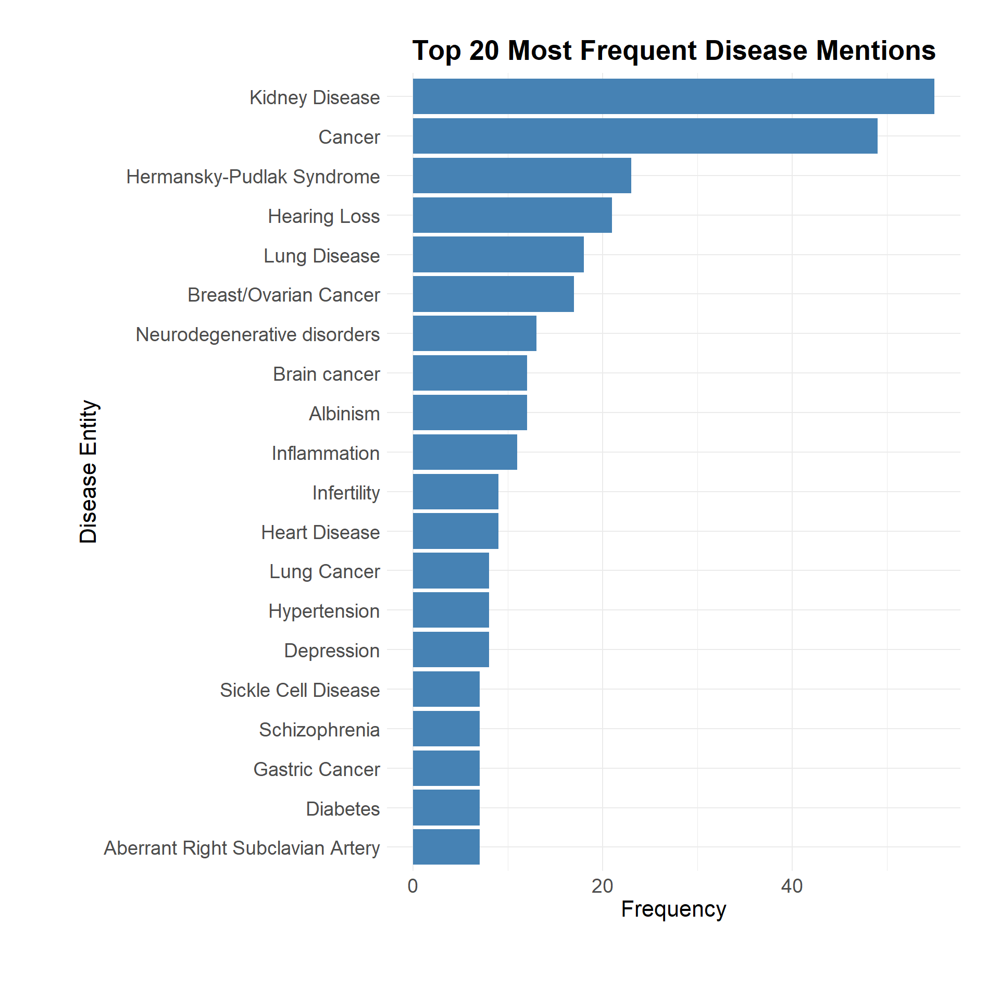

library(tidyverse)
library(stringr)
library(table1)
library(DT)
library(dplyr)
library(dplyr)
library(tm)
library(SnowballC)
library(wordcloud)
library(RColorBrewer)
library(readxl)
library(janitor)
a = read_csv("data/abstracts.csv", show_col_types = F)Gene-Disease Correlations
Loading Libraries & Data
Functions
map_disease_name = function(value) {
case_when(
nchar(value) == 1 ~ NA_character_,
#General Terms
value %in% c("cancer","tumor","malignancy", "malignancies","carcinoma","neoplasia","malignant tumor", "tumor","carcin") ~ "Cancer",
value %in% c("inflam", "inf", "##lammation","inflammation", "allergic inflammation") ~ "Inflammation",
value %in% c("mental illness", "mental iless", "psychiatric illness", "psychiatric disorders", "mental disorders","neuropsychiatric problems") ~ "Mental illness",
value %in% c("bleeding", "Bleeding Diathesis", "bleeding diathesis", "gingival bleeding", "epistaxis", "hemorrhage") ~ "Bleeding",
value %in% c("neurodegeneration", "brain proteinopathies","proteinopathies","neurodegenerative disorder","neurodegenerative and mental disorders",
"developmental and neurocognitive progressive deterioration","neurodegeneration") ~ "Neurodegenerative disorders",
str_detect(value, "alzheimer") ~ "Neurodegenerative disorders",
str_detect(value, "parkinson") ~ "Neurodegenerative disorders",
value %in% c("pd") ~ "Neurodegenerative disorders",
#Cancer types
value %in% c("tumorige", "lung adenocarcinoma", "luad","lung cancer", "Lung Cancer","lung tumor", "non - small cell lung cancer","nsclc") ~ "Lung Cancer",
value %in% c("hcc","liver cancer","Liver Cancer","hepatocellular carcinoma", "liver hepatocellular carcinoma") ~ "Liver Cancer",
value %in% c("kirc", "Kidney Cancer", "renal cell carcinoma", "kidney renal clear cell carcinoma", "clear cell renal cell carcinoma", "renal cancer", "ccrcc") ~"Kidney Cancer",
value %in% c("breast cancer", "brea","breast tumor", "gynecological malignancies", "cancerervical and uterine", "ovarian tumors", "ovarian cancer", "oc") ~ "Breast/Ovarian Cancer",
value %in% c("pca","prostate cancer", "prostate carcinoma") ~ "Prostate Cancer",
value %in% c("ptc", "papillary thyroid carcinoma", "papillary thyroid cancer", "Papillary Thyroid Carcinoma") ~ "Papillary Thyroid Carcinoma",
value %in% c("gastric cancer", "gc", "gastrointestinal cancer", "gastrointestinal cancers") ~ "Gastric Cancer",
value %in% c("hnc","head and neck cancer") ~ "Head and Neck Cancer",
value %in% c("brain tumor", "glioma", "gliomas", "brain gliomas", "neuroblastoma", "Neuroblastoma", "medulloblastoma", "pediatric tumor","nb") ~ "Brain cancer",
value %in% c("all", "Acute Lymphoblastic Leukemia", "acute lymphoblastic leukemia") ~ "Acute Lymphoblastic Leukemia",
value %in% c("melanoma","cscc") ~ "Skin cancer",
#Anemia
value %in% c("fa", "Thalassemia", "Fanconi Anemia", "fanconi anemia") ~ "Anemia",
value %in% c("schizophrenia", "scz", "Schizophrenia", "schizophreniametab", "sczmetabolic traits") ~ "Schizophrenia",
value %in% c("Depression","mdd", "depression", "depressive disorder") ~ "Depression",
value %in% c("chronic kidney disease", "ckd", "chronic renal insufficiency", "ksd",
"renal disease", "renal impairment", "impairment of renal function",
"kidney disease", "digestive and kidney disease",
"end - stage kidney disease", "hpsronic kidney disease",
"apol1 kidney disease", "proteinuric kidney diseases",
"kidney stone disease", "stone", "end - stage organ disease",
"kidney stones", "urolithiasis",
"kd", "eskd", "amkd", "dkd",
"Kidney Disease", "kidney disorders", "kidney damage", "kidney cell injury",
"diabetic kidney disease", "kidney transplant failure", "polycystic kidneys", "polycystic kidney disease",
"hydronephrosis", "vesicoureteral reflux", "dysplastic kidneys", "kidney size") ~ "Kidney Disease",
value %in% c("##matory bowel disease", "ibd", "colitis", "granulomatous colitis", "inflammatory bowel disease", "Inflammatory Bowel Disease") ~ "Inflammatory Bowel Disease",
value %in% c("Immunodeficiency", "disordered immunity", "nodeficiency") ~ "Immunodeficiency",
value %in% c("diabetes", "diabetes mellitus", "dm") ~ "Diabetes",
value %in% c("oculocuta", "oca", "oca1", "oca type 1", "periodic albinism", "albinism",
"albinism", "oculocutaneous albinism", "Albinism", "hypopigmentation", "periodic albino") ~ "Albinism",
value %in% c("sickle cell", "sickle cell anemia", "sickle cell disease",
"sca", "scd", "sse") ~ "Sickle Cell Disease",
value %in% c("idiopathic pulmonary fibrosis", "ipf", "pulmonary fibrosis",
"restrictive lung disease", "interstitial lung disease", "##iratory disease",
"lung inflammation", "airway inflammation", "allergic airway inflammation", "asthma", "allergic asthma", "bronchial asthma") ~ "Lung Disease",
value %in% c("##cytop") ~ "Podocytopathy",
str_detect(value, "enterella") ~ "Salmonella",
value %in% c("hearing loss", "genetic hearing loss", "deafness",
"sensorineural deafness", "sensorineural hearing loss",
"sensorineural disorders", "nonsyndromic deafness",
"autosomal recessive non - syndromic deafness",
"snhl", "hl") ~ "Hearing Loss",
value %in% c("infertility", "azoospermia", "non - obstructive azoospermia",
"male infertility", "noa", "no") ~ "Infertility",
value %in% c("glaucoma") ~ "Glaucoma",
value %in% c("hermansky - pudlak syndrome", "hps", "hp", "autosomal recessive disorder", "herman", "hsp") ~ "Hermansky-Pudlak Syndrome",
value %in% c("pulmona") ~ "Pulmonary Fibrosis",
value %in% c("immu") ~ "Immunodeficiency",
value %in% c("nec") ~ "Necrosis",
value %in% c("parasuis", "glaesserella parasui", "para") ~ "Glaesserella Parasuis",
value %in% c("thala") ~ "Thalassemia",
value %in% c("hyper", "hypertension", "Hypertension", "arterial hypertension") ~ "Hypertension",
value %in% c("hy") ~ "Hypotoxic",
value %in% c("cyt") ~ "Cytotoxicity",
value %in% c("pe") ~ "Preeclampsia",
value %in% c("bt") ~ "Bioavailable Testosterone",
value %in% c("dr") ~ "Nonsyndromic",
value %in% c("md") ~ "Ménière's Disease",
value %in% c("dis") ~ "Disease",
value %in% c("obes") ~ "Obesity",
value %in% c("cah") ~ "Congenital Adrenal Hyperplasia",
value %in% c("kfs", "kfs4") ~ "Klippel-Feil Syndrome",
value %in% c("kfa") ~ "Klippel-Feil Anomaly",
value %in% c("mld") ~ "Metachromatic Leukodystrophy",
value %in% c("mfs") ~ "Marfan Syndrome",
value %in% c("msd") ~ "Multiple Sulfatase Deficiency",
value %in% c("poi") ~ "Primary Ovarian Insufficiency",
value %in% c("purp", "rp") ~ "Strongylocentrotus Purpuratus",
value %in% c("pai") ~ "Primary Adrenal Insufficiency",
value %in% c("dsd") ~ "Disorder of Sex Development",
value %in% c("st", "ry fibrosis", "al", "##tension", "idy", "magp", "ol1", "in", "can", "choc", "ch", "ic", "sa", "resp") ~ NA_character_,
value %in% c("arsa", "arte", "ar") ~ "Aberrant Right Subclavian Artery",
value %in% c("cf","cystic fibrosis") ~ "Cystic Fibrosis",
value %in% c("lvh", "Left Ventricular Hypertrophy", "left ventricular hypertrophy", "left ventricular ( lv ) hypertrophy") ~ "Left Ventricular Hypertrophy",
value %in% c("stroke", "Strokes") ~ "Strokes",
value %in% c( "cardiomyopathy", "cardiomyopathies") ~ "Cardiomyopathy",
value %in% c("mpn") ~ "Myeloproliferative Neoplasms",
value %in% c("lu") ~ "Lungs",
str_detect(value, "huntington") ~ "Huntington's Disease",
str_detect(value, "kommerell") ~ "Kommerell's Diverticulum",
str_detect(value, "ménière") ~ "Ménière's Disease",
value %in% c("dl") ~ "Dysphagia Lusoria",
value %in% c("fat") ~ "Fat Droplet Formation",
value %in% c("cmd") ~ "Congenital Muscular Dystrophy",
value %in% c("gerd") ~ "Gastroesophageal Reflux Disease",
value %in% c("malf") ~ "Malformations",
value %in% c("csvd") ~ "Cerebral Small-Vessel Disease",
value %in% c("pms", "pm") ~ "Phelan-McDermid Syndrome",
value %in% c("chd", "cad", "Heart Disease", "coronary artery disease", "cardiovascular disease", "cardiac diseases") ~ "Heart Disease",
value %in% c("osa") ~ "Obstructive Sleep Apnea",
value %in% c("fsgs") ~ "Focal Segmental Glomerular Sclerosis",
value %in% c("vus") ~ "Variants of Unknown Significance",
value %in% c("sr", "srd") ~ "Specific Reading Disability",
value %in% c("hlhs") ~ "Hypoplastic Left Heart Syndrome",
value %in% c("cud") ~ "Cannabis Use Disorder",
value %in% c("od") ~ "Organ Dysfunction",
value %in% c("ptoa") ~ "Post-Traumatic Osteoarthritis",
value %in% c("ntd", "ntds") ~ "Neural Tube Defects",
value %in% c("rs") ~ "Respiratory Sinus Arrhythmia",
value %in% c("scm") ~ "Subclinical Mastitis",
TRUE ~ value
)
}
plot_word = function(data, goi) {
df = data %>%
select(gene, disease_entities) %>%
filter(gene == goi)
docs = Corpus(VectorSource(df$disease_entities))
toSpace = content_transformer(function(x, pattern) gsub(pattern, " ", x))
docs = tm_map(docs, toSpace, "/")
docs = tm_map(docs, toSpace, "@")
docs = tm_map(docs, toSpace, "#")
docs = tm_map(docs, content_transformer(tolower))
docs = tm_map(docs, removePunctuation)
docs = tm_map(docs, removeNumbers)
docs = tm_map(docs, removeWords, stopwords("english"))
docs = tm_map(docs, stripWhitespace)
dtm = TermDocumentMatrix(docs)
m = as.matrix(dtm)
word_freq = sort(rowSums(m), decreasing = TRUE)
word_df = data.frame(word = names(word_freq), freq = word_freq)
wordcloud(
words = word_df$word,
freq = word_df$freq,
min.freq = 2,
max.words = 100,
random.order = FALSE,
colors = brewer.pal(8, "Dark2"),
scale = c(3.5, 0.7)
)
}
map_journal_family <- function(journal) {
case_when(
str_detect(journal, regex("^Nat(ure)?", ignore_case = TRUE)) ~ "Nature",
str_detect(journal, regex("^Plos", ignore_case = TRUE)) ~ "PLoS",
str_detect(journal, regex("^Front", ignore_case = TRUE)) ~ "Frontiers",
str_detect(journal, regex("^Bmc", ignore_case = TRUE)) ~ "BMC",
str_detect(journal, regex("^Lancet", ignore_case = TRUE)) ~ "Lancet",
str_detect(journal, regex("^Jama", ignore_case = TRUE)) ~ "JAMA",
str_detect(journal, regex("^J Clin", ignore_case = TRUE)) ~ "J Clin",
str_detect(journal, regex("^Am J", ignore_case = TRUE)) ~ "American Journal",
str_detect(journal, regex("^Eur J", ignore_case = TRUE)) ~ "European Journal",
str_detect(journal, regex("^Cell", ignore_case = TRUE)) ~ "Cell",
str_detect(journal, regex("^Sci(ence)?|Sci Rep|Sci Adv", ignore_case = TRUE)) ~ "Science",
str_detect(journal, regex("^Proc Natl Acad Sci", ignore_case = TRUE)) ~ "PNAS",
TRUE ~ journal
)
}Data Cleaning
a_clean = a %>%
#not relevant publication
filter(pmid != "39406866") %>%
mutate(disease_entities = str_replace_all(disease_entities, "\\[|\\]|'", "")) %>%
mutate(disease_entities = str_split(disease_entities, ",\\s*"))
a_long = a_clean %>%
unnest(disease_entities) %>%
mutate(disease_entities = str_to_lower(str_trim(disease_entities))) %>%
mutate(std_name = map_disease_name(disease_entities)) %>%
filter(disease_entities != "") %>%
mutate(std_name = map_disease_name(disease_entities)) %>%
drop_na()Plots
Barplot
top_terms = a_long %>%
count(std_name, sort = TRUE)
top_terms %>%
slice_max(n, n = 20) %>%
ggplot(aes(x = reorder(std_name, n), y = n)) +
geom_col(fill = "steelblue") +
coord_flip() +
labs(
title = "Top 20 Most Frequent Disease Mentions",
x = "Disease Entity",
y = "Frequency"
) +
theme_minimal() +
theme(
plot.title = element_text(size = 20, face = "bold", hjust = 0.5),
axis.title.x = element_text(size = 16),
axis.title.y = element_text(size = 16),
axis.text.x = element_text(size = 14),
axis.text.y = element_text(size = 14),
legend.title = element_text(size = 14),
legend.text = element_text(size = 12),
plot.margin = margin(1, 1, 2, 2, "cm")
)
Heatmap
gene_disease = a_long %>%
count(gene, std_name, sort = TRUE)
gene_disease_matrix = a_long %>%
count(gene, std_name) %>%
pivot_wider(names_from = std_name, values_from = n, values_fill = 0)
gene_disease_long = gene_disease_matrix %>%
pivot_longer(-gene, names_to = "disease", values_to = "count")
top_diseases = gene_disease_long %>%
group_by(disease) %>%
summarise(total = sum(count)) %>%
arrange(desc(total)) %>%
slice_max(total, n = 20) %>%
pull(disease)
heatmap_data = gene_disease_long %>%
filter(disease %in% top_diseases)
ggplot(heatmap_data, aes(x = disease, y = gene, fill = count)) +
geom_tile(color = "white") +
scale_fill_gradient(low = "white", high = "red") +
labs(
title = "Gene-Disease Co-occurrence Heatmap",
x = "Disease Entity",
y = "Gene",
fill = "Co-occurrence"
) +
theme_minimal() +
theme(
plot.title = element_text(size = 20, face = "bold", hjust = 0.5),
axis.title.x = element_text(size = 16, face = "bold"),
axis.title.y = element_text(size = 16, face = "bold"),
axis.text.x = element_text(size = 14, angle = 45, hjust = 1),
axis.text.y = element_text(size = 14),
legend.title = element_text(size = 14, face = "bold"),
legend.text = element_text(size = 12),
plot.margin = margin(1, 1, 2, 2, "cm")
)Statistical Tests
contingency_tbl = table(a_long$gene, a_long$std_name)
chi_test = chisq.test(contingency_tbl)
chi_test$p.value [1] 4.624622e-47residuals = chi_test$stdres
#Significant results
sig_df = as.data.frame(as.table(residuals)) %>%
rename(gene = Var1, disease = Var2, stdres = Freq) %>%
filter(abs(stdres) > 2) %>%
arrange(desc(abs(stdres)))
sig_df %>%
datatable()Word Cloud
#plot_word("APOL1", a_long)#unique(df$gene)Validation
fp = "data/GeneALaCart-5231380-250417-150326.xlsx"
fp2 = "data/GeneALaCart-5231380-250417-150703.xlsx"
raw_summary = read_excel(fp, sheet = "Summaries") %>%
select(-InputTerm) %>%
clean_names() %>%
pivot_longer(
cols=-symbol,
names_to="source",
values_to="value"
)
raw_mcd = read_excel(fp, sheet = "MalaCardsDisorders") %>%
select(Symbol, Name) %>%
clean_names() %>%
rename(value = name) %>%
mutate(source = "MalaCardsDisorders")
raw_mcid = read_excel(fp, sheet = "MalaCardsInferredDisorders") %>%
select(Symbol, Name) %>%
clean_names() %>%
rename(value = name) %>%
mutate(source = "MalaCardsInferredDisorders")
raw_upd = read_excel(fp, sheet = "UniProtDisorders") %>%
select(Symbol, Summary) %>%
clean_names() %>%
rename(value = summary)
#Do the same for the last gene
raw_summary2 = read_excel(fp2, sheet = "Summaries") %>%
select(-InputTerm) %>%
clean_names() %>%
pivot_longer(
cols=-symbol,
names_to="source",
values_to="value"
)
raw_mcid2 = read_excel(fp2, sheet = "MalaCardsInferredDisorders") %>%
select(Symbol, Name) %>%
clean_names() %>%
rename(value = name) %>%
mutate(source = "MalaCardsInferredDisorders")
dx_df = bind_rows(raw_summary, raw_mcd, raw_mcid, raw_upd, raw_summary2, raw_mcid2) %>%
drop_na() %>%
rename(gene = symbol,
disease_entities = value)
unique(dx_df$gene) [1] "HPS4" "APOL1" "TRIOBP" "SFI1" "EFCAB6" "MYO18B" "ARSA"
[8] "CELSR1" "SUN2" "SEC14L3" "PIWIL3" df = dx_df %>%
select(gene, disease_entities)
docs = Corpus(VectorSource(df$disease_entities))
toSpace = content_transformer(function(x, pattern) gsub(pattern, " ", x))
docs = tm_map(docs, toSpace, "/")
docs = tm_map(docs, toSpace, "@")
docs = tm_map(docs, toSpace, "#")
docs = tm_map(docs, content_transformer(tolower))
docs = tm_map(docs, removePunctuation)
docs = tm_map(docs, removeNumbers)
docs = tm_map(docs, removeWords, stopwords("english"))
docs = tm_map(docs, stripWhitespace)
dtm = TermDocumentMatrix(docs)
m = as.matrix(dtm)
word_freq = sort(rowSums(m), decreasing = TRUE)
word_df = data.frame(word = names(word_freq), freq = word_freq)
wordcloud(
words = word_df$word,
freq = word_df$freq,
min.freq = 2,
max.words = 100,
random.order = FALSE,
colors = brewer.pal(8, "Dark2"),
scale = c(3.5, 0.7)
)Journals
journal_df <- a_clean %>%
mutate(
journal_clean = abstract %>%
str_extract("^.+?(?=\\.\\s\\d{4})") %>%
str_remove("^\\d+\\.\\s*") %>%
str_remove_all("\\[.*?\\]") %>%
str_remove_all("(?<=\\s)\\(.*?\\)") %>%
str_replace_all("\\s{2,}", " ") %>%
str_trim() %>%
str_to_title()
)